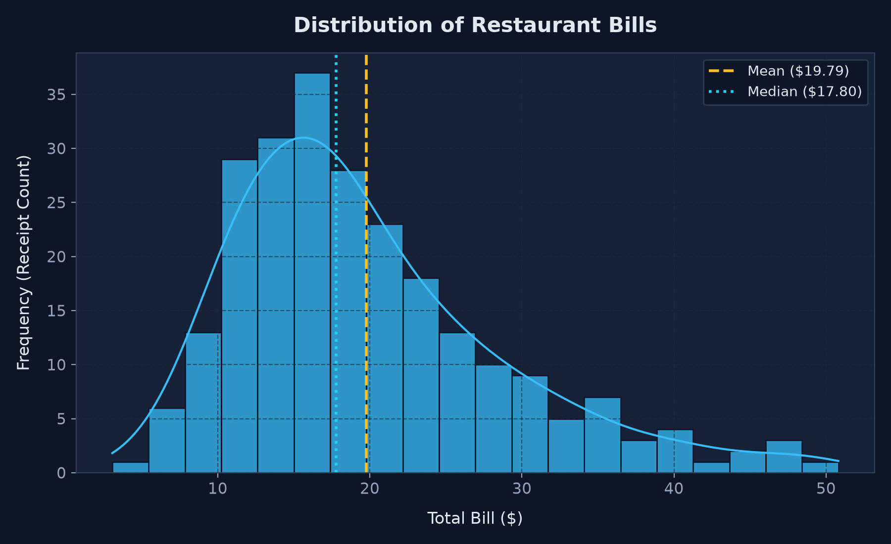
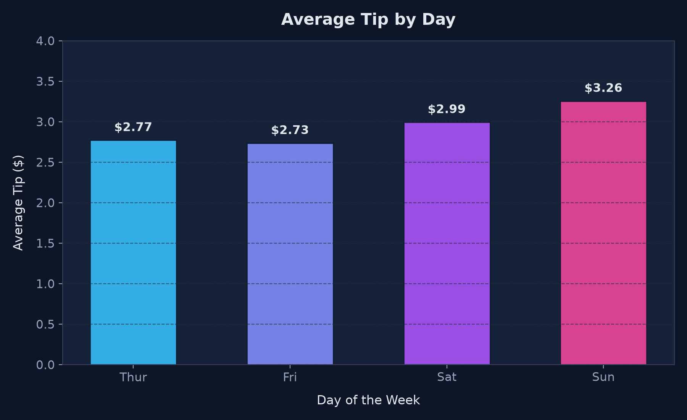
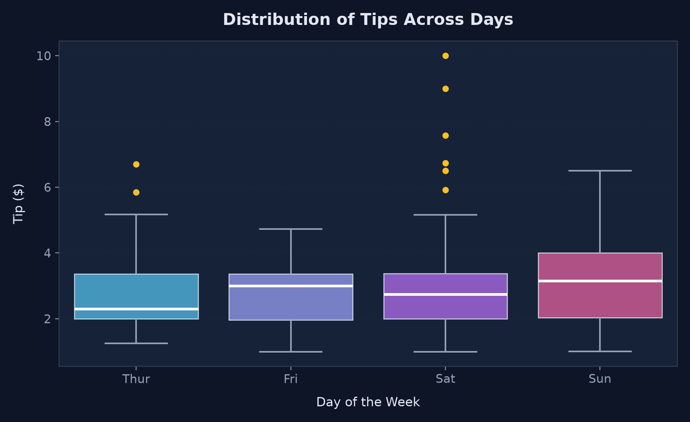
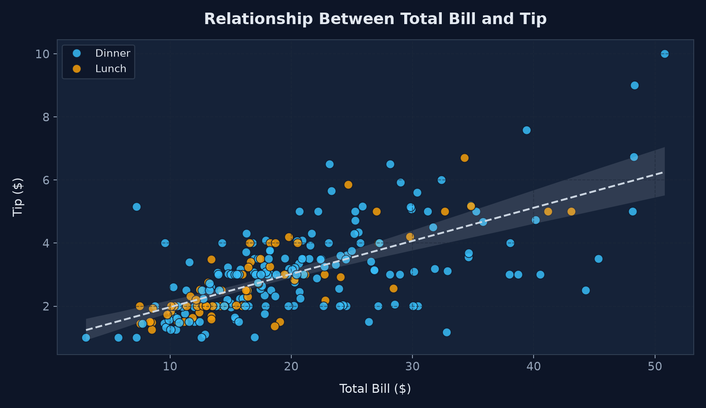
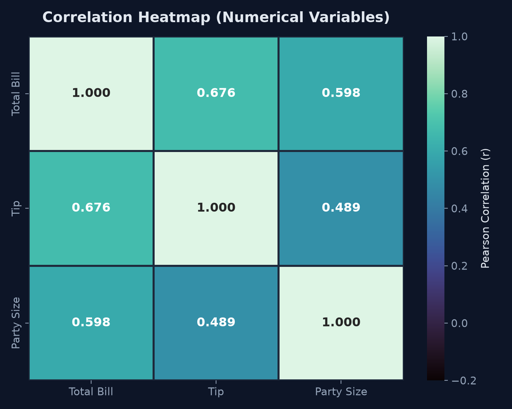

Data Visualization with Matplotlib & Seaborn
An end-to-end interactive exploratory data analytics platform analyzing the landmark Seaborn Tips dataset. Investigate how dining party sizes, meal schedules, and days of the week impact customer tipping behavior through publication-standard statistical graphics, distribution modeling, and interactive correlation matrices.
Interactive Analytics Dashboard
Explore multivariate relationships, distributions, and day-by-day restaurant dynamics. Toggle between dynamic browser Plotly visualizations and native Python Matplotlib & Seaborn high-resolution figures.
Distribution of Restaurant Bills
Histogram showing the frequency distribution and density profile of customer dining checks.

Average Tip by Day
Comparing mean tip values earned across Thursday, Friday, Saturday, and Sunday.

Distribution of Tips Across Days
Five-number summary (Min, Q1, Median, Q3, Max) and identification of extreme tip outliers.

Relationship Between Total Bill and Tip
Bivariate scatter plot categorized by meal service: Lunch vs. Dinner with regression trendline.

Correlation Heatmap (Numerical Variables)
Pairwise Pearson correlation coefficients between Total Bill, Tip, and Party Size.

Key Analytical Insights
Evidence-based findings calculated dynamically from the authentic Seaborn Tips dataset.
Dominant Bill Ranges & Spending Clustering
Dining bills do not follow a Gaussian normal distribution; rather, they are noticeably right-skewed. Over 53.7% of all dining parties spend between \$10.00 and \$20.00. The highest density modal spike occurs between \$13.00 and \$18.00. Premium bills exceeding \$40.00 constitute less than 4.1% of all visits.
Sunday Generates the Highest Average Tip
Sunday stands out as the most lucrative day for food servers, yielding an average tip of \$3.26. This surpasses Saturday (\$2.99), Thursday (\$2.77), and Friday (\$2.73). Sunday diners frequently visit for leisure family dinners where party sizes skew larger and tipping generosity peaks.
Saturday Exhibits Maximum Tipping Volatility
Saturday hosts the largest receipt volume (87 tables, 35.7% of all data) and the highest tip dispersion (standard deviation of 1.63). Saturday encompasses both modest \$1.00 tips and the dataset's absolute maximum of \$10.00 on a \$50.81 check. In contrast, Thursday displays tightly clustered tips around its \$2.31 median.
Dollar Tips Scale Linearly While Percentages Regress
There is a robust linear relationship between bill total and tip amount (r = 0.6757, p < 0.001). However, when computing tip percentage, diners at small checks (\$10–\$15) frequently leave 18–20%, whereas bills above \$40.00 see tip percentages regress toward 13–14%.
Total Bill is the Primary Determinant of Gratuity
The correlation matrix demonstrates that Total Bill shares the strongest correlation with Tip (r = 0.676). While Party Size also correlates with Tip (r = 0.489), it exerts its influence primarily by expanding total food consumption (r = 0.598 between Size and Total Bill), confirming that order volume is the direct driver.
Data Explorer
Search, filter, and sort every dining record. Filter changes here synchronize seamlessly with the dashboard statistics and charts.
| # | Total Bill ($) | Tip ($) | Tip % | Day | Meal Time | Payer Gender | Smoker | Party Size |
|---|
Methodology & Analytical Principles
Foundations of the dataset, statistical selection rationales, and principles of data integrity.
The Seaborn Tips Dataset
The Tips dataset was recorded by a food server over a period of several months in a suburban restaurant, and originally popularized in statistical education by Bryant & Smith (1995).
It encompasses 244 observations with 7 key attributes: total bill amount, tip given, payer gender, smoker status, day of the week (Thur, Fri, Sat, Sun), meal service (Lunch, Dinner), and dining party head count.
Visual Chart Selection Rationale
Each chart type was deliberately chosen for statistical clarity:
- Histogram: Best for observing the continuous distribution shape, unimodality, and skewness of total bills.
- Bar Chart: Clear representation of aggregate measures (means) across discrete, independent categories (days).
- Box Plot: Non-parametric depiction of five-number summary and robust detection of outliers without distortion.
- Scatter Plot: Essential for visualizing bivariate continuous correlations and identifying clustering across meal times.
- Heatmap: High-density matrix visualization for multi-attribute pairwise Pearson coefficients.
Mathematical Correlation Calculation
Linear correlation is measured using the Pearson correlation coefficient ($r$), defined as the normalized covariance of two variables:
Values range from -1.0 (perfect inverse relationship) to +1.0 (perfect direct relationship), with 0.00 indicating an absence of linear association.
Correlation Does Not Prove Causation
While total bill and tip are strongly correlated (r = 0.676), one cannot automatically assert that increasing bill totals alone causes diners to tip generously.
Lurking confounding variables include dining party size, alcohol consumption, celebratory events, and service quality. In observational data without controlled randomized trials, correlation establishes association, not causal direction.
Palette Design & Visual Accessibility
Visualization quality depends heavily on thoughtful design choices:
- WCAG Contrast: High-contrast foregrounds (#f8fafc) on deep dark navy (#080d1a) reduce eye strain and ensure readability.
- Baseline Zero: Bar charts maintain a mandatory zero baseline to eliminate misleading perceptual magnification.
- Colorblind-Safe Palettes: Hue combinations (Sky Blue, Amber, Cyan) are distinct across deuteranopia and protanopia.
- Contextual Tooltips: Interactive mouse hovers show granular figures, preventing cognitive overload.
Dual Architecture: Python & Web Stack
The platform implements a unified dual-engine architecture:
Python (pandas, NumPy, Matplotlib, Seaborn) conducts the statistical processing and renders publication-grade figures in outputs/.
The front-end client (ES6+, Plotly.js) dynamically renders responsive canvas/SVG charts with instantaneous client-side filtering.
Project Conclusion & Learning Outcomes
This internship project successfully bridges raw statistical analysis with modern, human-centric web visualization. Through the rigorous exploration of the Seaborn Tips dataset, we have demonstrated how empirical data reveals clear operational dynamics: Sunday dinner shifts represent the highest server gratuity yield, total dining bill acts as the dominant predictor of dollar tips, and party sizes elevate tips through expanded food consumption rather than higher tip percentages.